pt_appDocumentar el alcance, uso previsto, entradas, salidas, controles,
evidencias y limites del aplicativo pt_app como herramienta
analitica del Programa de Ensayos de Aptitud (PEA) para gases
contaminantes criterio.
El aplicativo soporta el preprocesamiento, consolidacion de datos, revision inicial, analisis estadistico, evaluacion de homogeneidad y estabilidad, calculo de valores asignados, puntajes de desempeno, salidas tecnicas e informe final. Su uso debe permitir demostrar que los datos, transformaciones, criterios estadisticos, versiones, resultados y decisiones tecnicas permanecen trazables, revisables y adecuados para evaluaciones de desempeno tecnicamente defendibles.
Aplica al aplicativo pt_app durante las fases de
recepcion de exportaciones oficiales, preprocesamiento, revision inicial
de datos, consolidacion, analisis estadistico, evaluacion de
homogeneidad/estabilidad y generacion de informe del ensayo de
aptitud.
Incluye:
calaire-app y
datasets consolidados.sigma_pt, incertidumbres, diferencias,
compatibilidad metrologica y puntajes z, z',
zeta y En.No incluye:
sigma_pt, incertidumbre o reglas de
decision.| Campo | Descripcion |
|---|---|
| Aplicativo | pt_app |
| Plataforma | Aplicacion web R/Shiny con modulos reactivos y calculos en R. |
| Archivo principal | app.R |
| Uso previsto | Preprocesar datos oficiales, consolidar datasets, ejecutar calculos estadisticos aprobados, evaluar homogeneidad/estabilidad, generar salidas tecnicas e informe final. |
| Rol en el SGC | Aplicativo critico para validez estadistica, trazabilidad de calculos, integridad de datos y generacion de evidencias para informe. |
| Normas relacionadas | ISO/IEC 17043:2023 e ISO 13528:2022. |
| Documentos SGC relacionados | sgc_17043.md, sgc_13528.md,
P-PSEA-03, P-PSEA-07, P-PSEA-08,
P-PSEA-09, P-PSEA-15, P-PSEA-16,
P-PSEA-19, P-PSEA-20, I-PSEA-04,
I-PSEA-05. |
| Evidencia visual | Carpeta capturas/, generada con Playwright y Chromium
/usr/bin/chromium. |
El aplicativo separa la operacion en modulos de analisis:
| Modulo | Proposito | Evidencia |
|---|---|---|
| Carga de datos | Recibir archivos de homogeneidad, estabilidad, consolidados de participantes y referencia CALAIRE. | Figura 1 y Figura 2 |
| Preprocesador | Ejecutar flujo crudos CALAIRE -> pt_app, exportacion
a calaire-app, importacion y consolidacion final. |
Figura 3 |
| Homogeneidad y estabilidad | Evaluar datos de entrada, distribuciones, validacion, resultados de homogeneidad, estabilidad e incertidumbre asociada. | Figuras 4 a 7 |
| Valores atipicos | Revisar valores extremos mediante resumen y visualizacion. | Figura 8 |
| Valor asignado | Calcular Algoritmo A, consenso, referencia, expertos y compatibilidad metrologica. | Figuras 9 a 11 |
| Puntajes EA | Calcular y visualizar puntajes z, z',
zeta y En. |
Figuras 12 a 14 |
| Informe global | Consolidar resultados, parametros y mapas de evaluacion por metodo. | Figura 15 |
| Participantes | Presentar resultados detallados por participante. | Figura 16 |
| Generacion de informes | Configurar identificacion, parametros, vista previa y descarga del informe final en Word. | Figura 17 |
| Entrada | Uso en pt_app |
Control requerido |
|---|---|---|
F-PSEA-09 / datos de participantes exportados |
Base oficial para evaluacion de aptitud. | Deben corresponder a exportacion oficial aprobada y conservar identificacion de ronda. |
F-PSEA-12 / datos consolidados de ronda |
Entrada principal para calculo de valor asignado, puntajes e informe. | Deben estar versionados y trazables a fuente, fecha y responsable. |
F-PSEA-11A / datos preprocesados de homogeneidad |
Evaluacion de suficiencia de homogeneidad del item. | Deben conservar muestras, replicas, analito, nivel y unidades. |
F-PSEA-11B / datos preprocesados de estabilidad |
Evaluacion de estabilidad durante el periodo de ronda. | Deben conservar fechas, replicas, analito, nivel y unidades. |
| Referencia CALAIRE | Valor de referencia separado o incluido como participante
ref. |
Debe identificarse como referencia y protegerse contra divulgacion indebida. |
F-PSEA-04 / tabla de equipos e instrumentacion |
Anexo tecnico para informe. | Debe mantenerse asociada al participante y a la ronda. |
F-PSEA-05 / F-PSEA-06 / ficha basica y
planificacion de ronda |
Definen configuracion, analitos, niveles, criterios y condiciones aplicables. | Deben estar aprobados antes de aplicar calculos oficiales. |
| Parametros de informe | Identificacion, responsables, fecha, metrica, metodo, factor
k. |
Deben revisarse antes de emision. |
| Salida | Descripcion | Uso SGC |
|---|---|---|
F-PSEA-10 / registro de preprocesamiento |
Datos listos para intercambio pt_app /
calaire-app y bitacora de preparacion. |
Evidencia de flujo tecnico de datos. |
F-PSEA-12 / dataset consolidado |
Datos oficiales de evaluacion. | Base de calculo y trazabilidad de resultados. |
F-PSEA-11C / resultados de homogeneidad |
Tablas, criterios y conclusiones por metodo. | Evidencia de aptitud del item. |
F-PSEA-11D / resultados de estabilidad |
Tablas, criterios y conclusiones por metodo. | Evidencia de mantenimiento del item durante la ronda. |
| Contribuciones de incertidumbre | u_hom, u_stab y componentes usados en
evaluacion. |
Soporte para incertidumbre del valor asignado. |
| Valores asignados | Referencia, consenso, Algoritmo A y expertos. | Base de comparacion de desempeno. |
| Puntajes de desempeno | z, z', zeta, En
y clasificaciones. |
Evaluacion de participantes. |
| Informe global | Resumen de parametros, resultados y mapas de desempeno. | Revision tecnica previa al informe. |
F-PSEA-13 / informe final Word |
Documento descargable para emision controlada. | Insumo para expediente de ronda, revision y autorizacion. |
| Eje ISO/IEC 17043 | Referencia SGC | Requisito de control | Implementacion/evidencia en pt_app |
|---|---|---|---|
| Diseno y planificacion del esquema | sgc_17043.md, secciones 8.3 y 8.4 |
La evaluacion debe responder a objetivos, criterios y metodos preestablecidos. | La app no define el criterio; implementa criterios aprobados mediante modulos parametrizados de valor asignado, puntajes e informe. |
| Manejo de items | sgc_17043.md, seccion 8.5 |
Debe demostrarse que los items son adecuados para el proposito. | Modulos de homogeneidad, estabilidad y contribuciones de incertidumbre documentan suficiencia del item. |
| Recepcion y validacion de datos | sgc_17043.md, seccion 8.7 |
Deben controlarse formato, transferencia, unidades, consistencia y resultados incompletos. | Modulo de carga y validacion muestra estado de archivos, vistas previas y mensajes de revision. |
| Analisis estadistico | sgc_17043.md, secciones 8.4 y 8.7 |
Los metodos deben ser apropiados, documentados y aplicados de forma consistente. | Se implementan metodos robustos, consenso, Algoritmo A, referencia, expertos y puntajes normalizados. |
| Evaluacion de desempeno | sgc_17043.md, seccion 8.8 |
Los criterios deben ser preestablecidos y aplicados consistentemente. | Modulo de puntajes clasifica desempeno por participante, analito, nivel y metodo. |
| Informe | sgc_17043.md, seccion 8.8 |
El informe debe ser claro, controlado y revisable antes de emision. | Modulo de generacion de informes permite configurar identificacion, responsables, metrica, metodo y descarga Word. |
| Confidencialidad | sgc_17043.md, seccion 5.2 |
Debe protegerse identidad y datos sensibles de participantes. | El aplicativo opera con codigos de participante; la divulgacion oficial queda sujeta a revision y autorizacion SGC. |
| Registros y trazabilidad | sgc_17043.md, seccion 9 |
Debe poder reconstruirse la ronda, entradas, calculos, revisiones y salidas. | Archivos de entrada, salidas CSV/Word, capturas, parametros, indice tecnico e informe global permiten reconstruccion tecnica. |
| Sistemas informaticos | sgc_17043.md, seccion 9 |
El software que analiza o reporta datos debe estar controlado y validado proporcionalmente al riesgo. | Repositorio versionado, pruebas, datos conocidos, capturas y script reproducible soportan validacion y control de cambios. |
| Eje ISO 13528 | Referencia SGC | Requisito estadistico | Implementacion/evidencia en pt_app |
|---|---|---|---|
| Revision inicial de datos | sgc_13528.md, seccion 7.2 |
Detectar errores de unidad, formato, transcripcion, duplicados, faltantes y valores extremos antes del calculo. | Carga de datos, vistas previas, validacion y modulo de valores atipicos. |
| Homogeneidad | sgc_13528.md, seccion 7.1 |
Evaluar si variacion entre items afecta la evaluacion. | Modulo de homogeneidad con resumen, ANOVA, criterios MADe/nIQR y exportacion CSV. |
| Estabilidad | sgc_13528.md, seccion 7.1 |
Evaluar si el item se mantiene apto durante la ronda. | Modulo de estabilidad con comparaciones, criterios MADe/nIQR y exportacion CSV. |
| Valor asignado | sgc_13528.md, seccion 8 |
Justificar y calcular el valor usado como referencia de desempeno. | Valor de referencia, consenso MADe/nIQR, Algoritmo A y metodo de expertos. |
| Incertidumbre del valor asignado | sgc_13528.md, secciones 4.2 y 7.1 |
Considerar incertidumbre propia y contribuciones relevantes. | Tablas de u_hom, u_stab,
u(x_pt) y U(x_pt)_def. |
sigma_pt |
sgc_13528.md, secciones 4.3 y 9 |
Definir criterio de dispersion para evaluar aptitud. | Parametros de consenso, robustos y expertos usados en calculo de puntajes. |
| Valores atipicos | sgc_13528.md, seccion 7.3 |
Minimizar influencia sin exclusiones discrecionales no justificadas. | Resumen de Grubbs y metodos robustos que reducen influencia de extremos. |
| Puntajes | sgc_13528.md, seccion 10 |
Evaluar desempeno con indicadores adecuados al proposito. | Calculo de z, z', zeta y
En, con tablas y graficos por participante. |
| Validacion de software | sgc_13528.md, seccion 5 |
Verificar rutinas con datos conocidos y pruebas de regresion ante cambios. | Evidencias existentes: tests/testthat/,
validation_1/outputs/,
VALIDACION DEFINITIVA/validation_1/outputs/ y
Entregables_pt_app/09_informe_final/tests/test_09_reproducibilidad.R;
este expediente agrega capturas y script reproducible. |
Cada uso oficial del aplicativo debe dejar evidencia de:
x_pt,
sigma_pt, incertidumbre, factor k, metrica e
intervalos/criterios.pt_app debe validarse antes de uso oficial y despues de
cambios que puedan afectar lectura, transformaciones, filtros, calculos,
graficos, plantillas de informe, estructura de datos, dependencias,
permisos, exportaciones o almacenamiento de resultados.
La evidencia minima de validacion o cambio debe incluir:
Los cambios no deben liberarse para uso oficial sin aprobacion del responsable autorizado. Una falla que pueda afectar resultados emitidos debe tratarse como potencial trabajo no conforme y activar los procedimientos aplicables.
Las siguientes capturas se conservan en la subcarpeta
capturas como evidencia funcional del aplicativo.
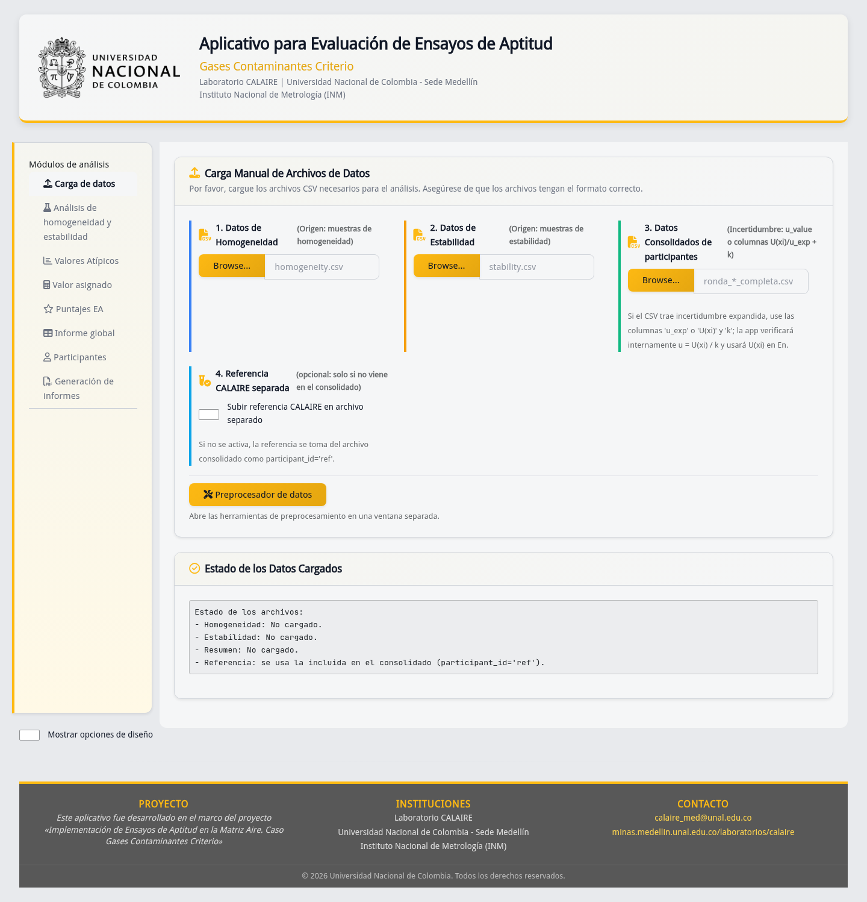
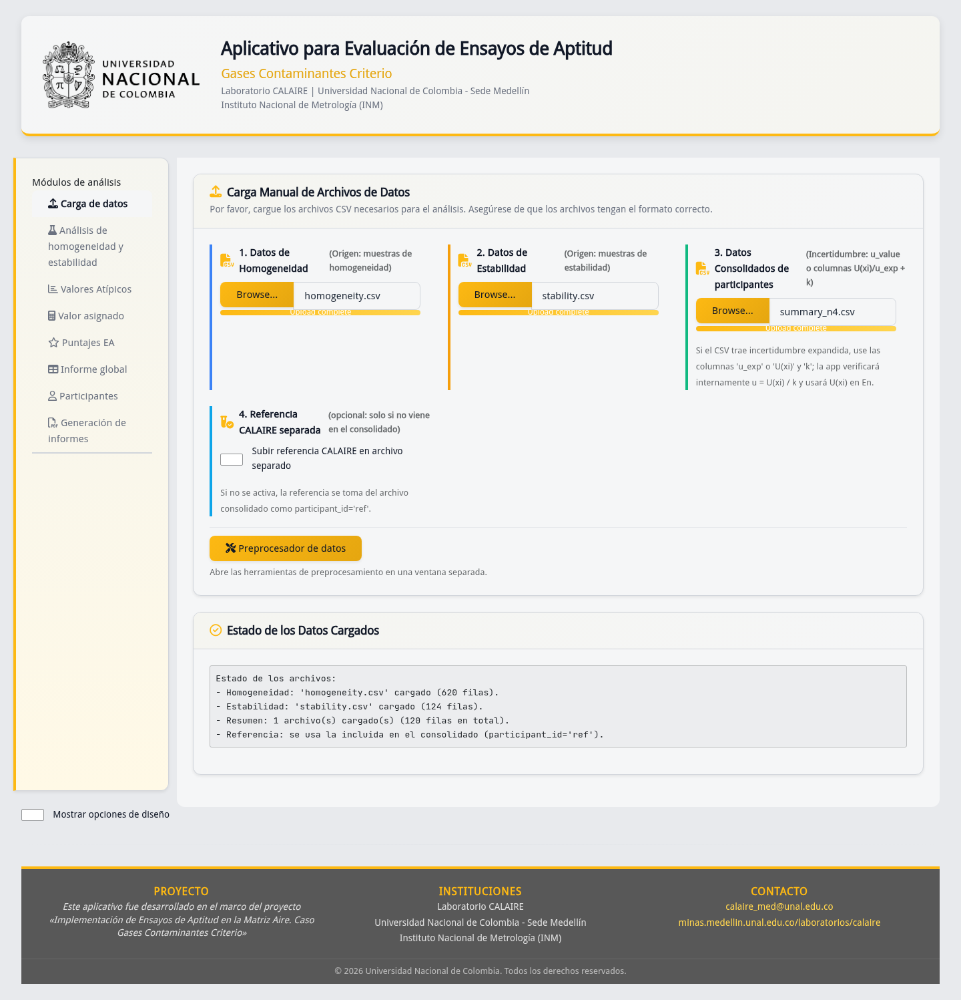
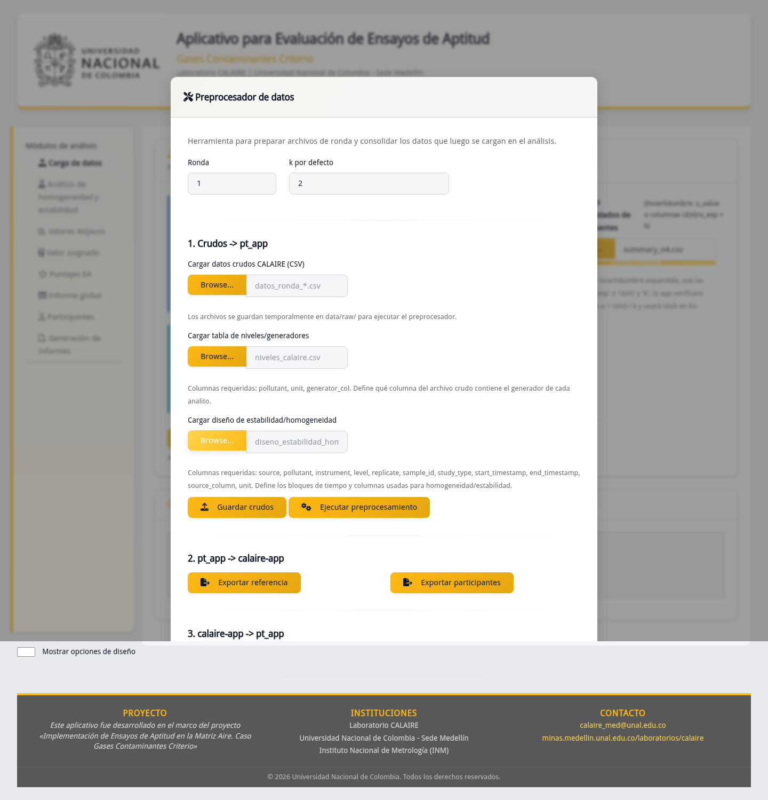
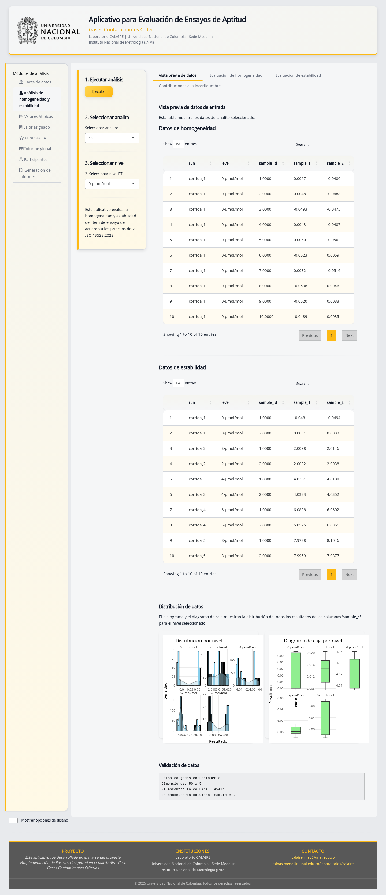
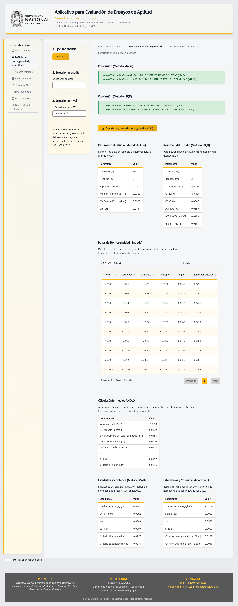
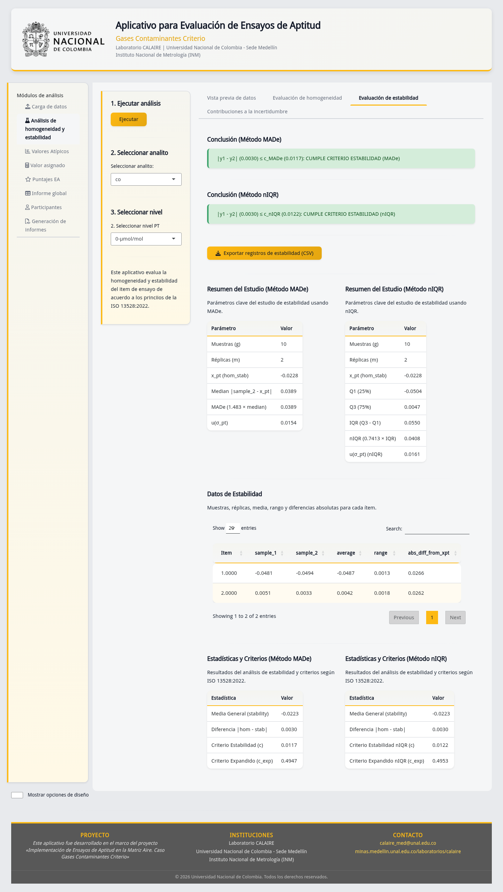
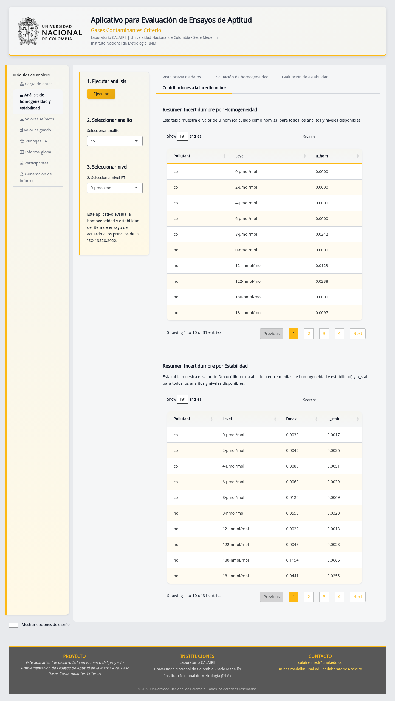
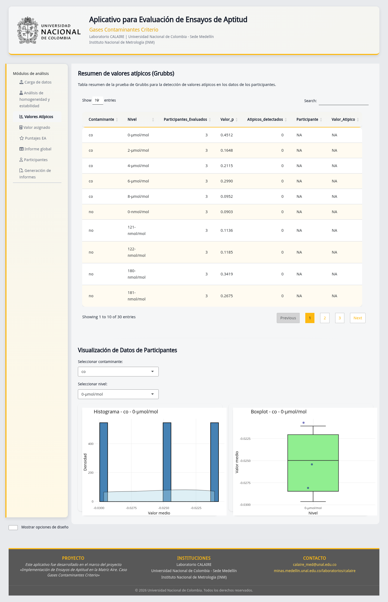
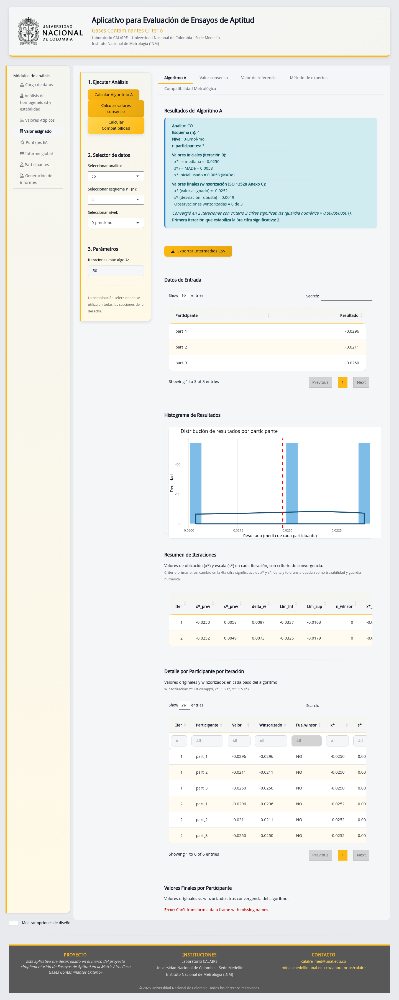
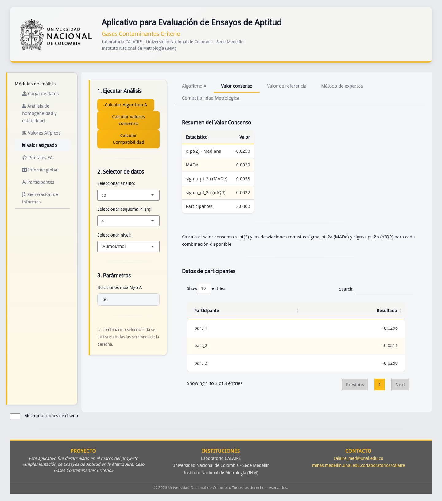
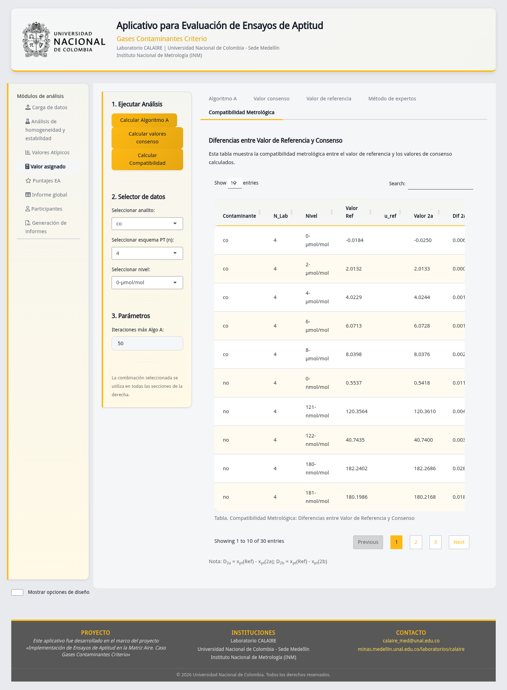
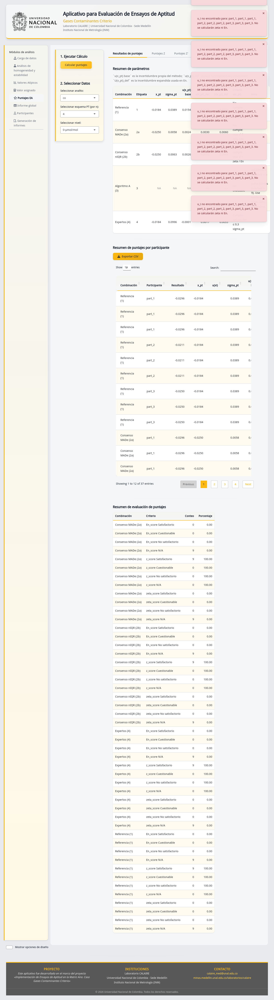
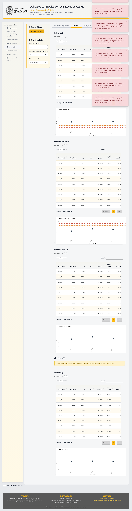
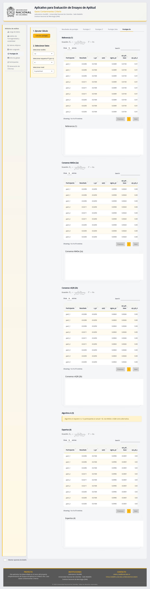
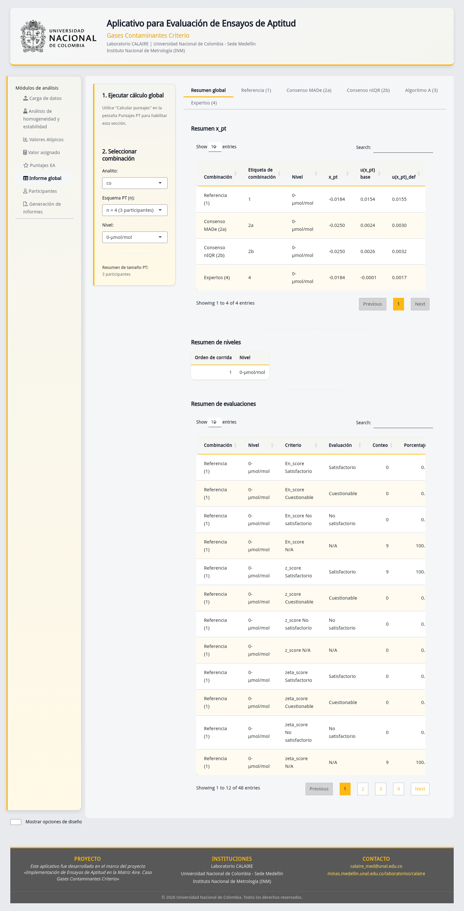
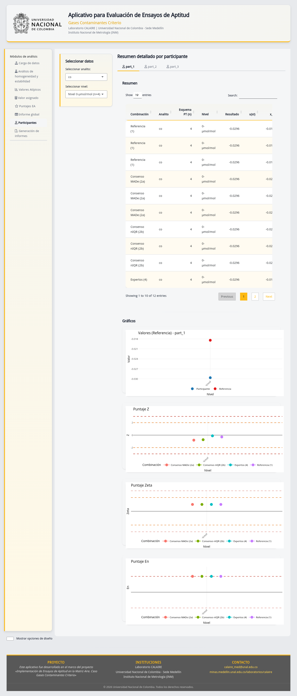
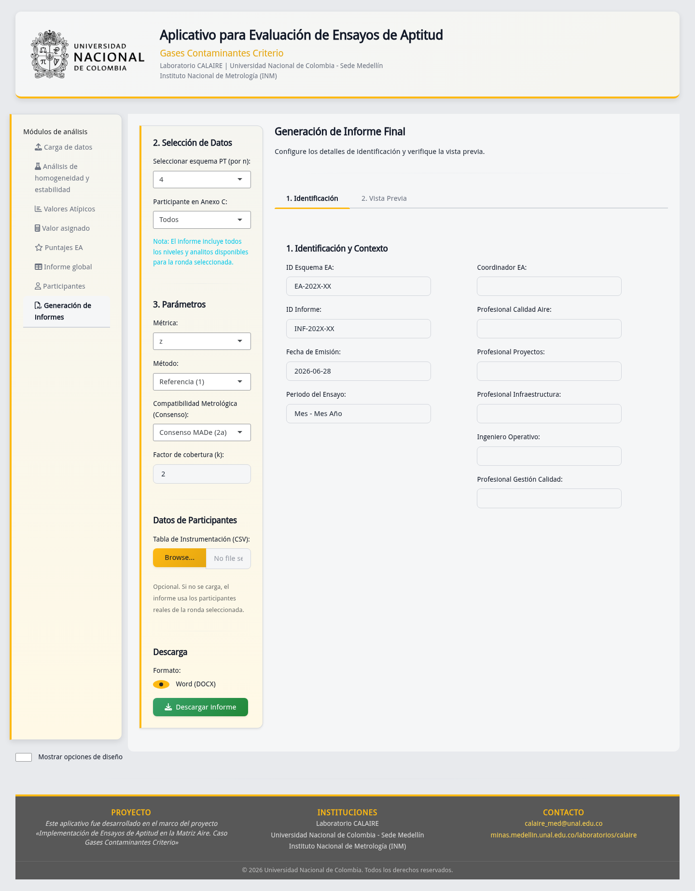
| Codigo/documento | Relacion |
|---|---|
sgc_17043.md |
Guia conceptual de requisitos del SGC basados en ISO/IEC 17043:2023. |
sgc_13528.md |
Guia conceptual de requisitos estadisticos basados en ISO 13528:2022. |
DG-PSEA-02 |
Aplicativo calaire-app, fuente de datos oficiales para
pt_app. |
I-PSEA-04 |
Instructivo de uso del preprocesador de pt_app. |
I-PSEA-05 |
Instructivo de uso del modulo de analisis PT de
pt_app. |
P-PSEA-03 |
Control de registros y evidencias del PEA. |
P-PSEA-07 |
Criterio estadistico que gobierna el analisis. |
P-PSEA-08 |
Flujo tecnico de datos digitales del PEA. |
P-PSEA-09 |
Generacion y emision del informe de resultados. |
P-PSEA-15 |
Trabajo no conforme, no conformidades y acciones correctivas. |
P-PSEA-16 |
Divulgacion y control de valores sensibles. |
P-PSEA-19 |
Confidencialidad operativa interna del PEA. |
P-PSEA-20 |
Competencia y autorizacion operativa del PEA. |
F-PSEA.